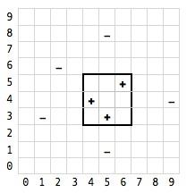

FIND-S Algorithm - simple question
The FIND-S algorithm is probably one of the most simple machine learning algorithms. However, I can't find many examples out there.. Just the standard 'sunny, rainy, play-ball' examples that's always used in machine learning. Please could someone help me with this application (its a past exam question in machine learning).
Hypotheses are of the form a <= x <= b, c <= y <= d where x and y are
points in an x,y plane and c and d are any integer. Basically, these
hypotheses define rectangles in the x,y space.
These are the training examples where - is a negative example and + is a
positive example and the pairs are the x,y co-ordinates:
+ 4, 4 + 5, 3 + 6, 5 - 1, 3 - 2, 6 - 5, 1 - 5, 8 - 9, 4
All I want to do is apply FIND-S to this example! It must be simple! Either some tips or a solution would be awesome.
Thank you.
Answer
Find-S seeks the most restrictive (ie most 'specific') hypothesis that fits all the positive examples (negatives are ignored).
In your case, there's an obvious graphical interpretation: "find the smallest rectangle that contains all the '+' coordinates"...

... which would be a=4, b=6, c=3, d=5.
The algorithm for doing it would be something like this:
Define a hypothesis rectangle h[a,b,c,d], and initialise it to [-,-,-,-] for each + example e { if e is not within h { enlarge h to be just big enough to hold e (and all previous e's) } else { do nothing: h already contains e } }
If we step through this with your training set, we get:
0. h = [-,-,-,-] // initial value 1. h = [4,4,4,4] // (4,4) is not in h: change h so it just contains (4,4) 2. h = [4,5,3,4] // (5,3) is not in h, so enlarge h to fit (4,4) and (5,3) 3. h = [4,6,3,5] // (6,5) is not in h, so enlarge again 4. // no more positive examples left, so we're done.